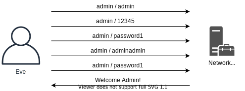

Кибербезопасность. Социальная инженерия
Многие системы защищены простым паролем. Это не идеально, поскольку во многих случаях пароли могут быть легко взломаны, повторно использованы или иным образом использованы злоумышленниками. В этом разделе будут рассмотрены атаки и защиты, связанные с паролями.
Надежность пароля
Что определяет надежный пароль? Насколько сложен пароль? Сколько в нём символов? Какое количество специальных символов?
Известный создатель комиксов xkcd.com блестяще показывает, как можно взломать пароли, в комиксе ниже. Просмотрите его на секунду и давайте обсудим дальше.

Если мы рассмотрим первый пароль Tr0ub4dor&3, этот пароль будет соответствовать большинству правил политики паролей, например, с заглавными буквами, цифрами, специальными символами и длиной 11 символов. Однако с этим паролем есть проблемы, такие как:
- Трудно вспомнить. Вы заменили первый символ O (буква) на 0 (число) или это был второй символ? Вы заменили символ на 4 или нет?
- Трудно печатать. Вы должны вводить разные буквы, цифры и специальные символы в особом порядке. Скорее всего, это будут не самые быстрые слова, набираемые на клавиатуре.
- Это не очень надёжно! Пароль основан на довольно распространённом слове и не даёт большой надежности, всего около 28 бит энтропии.
Вместо того, чтобы выбирать пароли, у которых есть эти отрицательные факторы, мы можем значительно увеличить энтропию паролей простыми способами. Если мы рассмотрим пароль CorrectHorseBatteryStaple, мы увидим значительное улучшение пароля:
- Пароль легко набрать. Печатать обычными словами - это обычное дело для многих повседневных дел, и вы можете сделать это очень быстро.
- Легко запомнить. Используя визуальное изображение пароля, лошади, батареи, скобы и правильного слова, мы можем запомнить это намного легче.
- Он значительно сильнее противостоит большинству действий по взлому паролей! Он предлагает около 44 бит энтропии, что делает его действительно трудным для взлома.
Такие пароли, как этот, называются парольными фразами и, как правило, намного лучше, чем простое слово с некоторой сложностью. Подумайте, как можно улучшить пароль, чтобы он стал еще надежнее и соответствовал правилам политики паролей, таким как специальные символы и заглавные буквы! Вы даже можете использовать пробелы в своем пароле, что сделает ввод парольных фраз ещё более естественным.
Менеджеры паролей
Записывать пароль в течение многих лет считалось плохой практикой, но так ли это на самом деле? Использование одного и того же пароля для нескольких онлайн-сервисов сопряжено со значительным риском: что, если одна из этих платформ будет взломана? Затем этот пароль будет скомпрометирован, и злоумышленники могут повторно использовать пароль во всех других службах, где он используется.
Чтобы решить эту проблему, не рекомендуется повторно использовать один и тот же пароль в нескольких сервисах. Это действительно усложняет работу пользователей, поскольку от них требуется не только использовать уникальные пароли, но и в то же время создавать сложные и надёжные пароли! Диспетчер паролей помогает решить эту проблему, предлагая пользователям максимально безопасным способом записывать пароли в файл, базу данных или другую систему, делая пароли легкодоступными и гарантируя, что они надёжны и уникальны для разных сервисов.
При правильной реализации менеджер паролей будет:
- Делать использование Интернета гораздо более безопасным.
- Повысит производительность, поскольку пароли для различных сервисов можно легко найти, скопировать и вставить в соответствующие сервисы, в которые пользователь хочет войти.
- Предлагает простые способы сброса и восстановления новых паролей при необходимости.
Написание паролей считается гораздо меньшим риском для наших пользователей, чем повторное использование паролей. Да, это не идеальное решение, поскольку диспетчер паролей потенциально может быть взломан, однако это считается гораздо более безопасным подходом.
Решения без пароля
Что, если с паролями можно положить конец? Всегда есть кто-то, кто не может каждый день вводить более длинную парольную фразу в качестве пароля. Для этого может быть несколько причин, например:
- Сотрудники, не разбирающиеся в IT, в офисе.
- Врач, который ежедневно посещает много разных компьютеров в больнице, посещая разных пациентов в разных палатах.
- Трудно ввести пароль в системе, которая его требует.
Разработка и внедрение систем, не требующих от пользователей ввода пароля, быстро развиваются. Вместо того, чтобы просить пользователей пройти аутентификацию с помощью пароля, что, можно разрешить им использовать, например:
- Какую-то часть человека, например лицо или отпечаток пальца.
- Какой-то предмет, что у них есть, например жетон или мобильный телефон.
Здесь есть проблемы, но с точки зрения безопасности, действительно ли мы усугубляем проблему или улучшаем её для наших пользователей? Мы должны помнить, что мы не стремимся внедрять совершенные системы безопасности, они обычно находятся вне досягаемости и нереализуемы, поэтому вместо этого мы должны тщательно продумать, как мы можем ограничить угрозы и в то же время облегчить жизнь нашим пользователям. Пароли не идеальны, равно как и решения без пароля. Какой из них вы реализуете для своих пользователей?
Многофакторная аутентификация
По мере того, как мы узнаем, что независимо от того, какое решение используется для проверки пользователей, их учетные записи по-прежнему будут сопряжены со значительными рисками. Для снижения риска могут быть реализованы другие решения.
Многофакторная аутентификация позволяет решениям не только проверять пользователя, например, на основе его пароля, но в то же время требовать от пользователей предоставления второго фактора, подтверждающего, кем они являются.

Есть несколько разных способов узнать о втором факторе. Вот несколько примеров:
- Используйте приложение аутентификации на смартфоне, чтобы предоставить секретный код.
- Получите секретный код с помощью SMS ("Служба коротких сообщений") на телефон.
- Используйте аппаратный токен для предоставления секретного кода.
- Предъявите отпечаток пальца или лицо, чтобы идентифицировать особу.
Для всего вышеперечисленного требуется не только знать пароль, но и запрашивается второй элемент (фактор).
Подобные решения иногда считаются очень агрессивными для пользователей. Чтобы решить эту проблему, можно применить концепцию DAC ("Discretionary Access Control" - "Дискреционный контроль доступа"). DAC позволяет решению для входа в систему решить, стоит ли бросать вызов пользователю с помощью многофакторного кода. Например, многофакторный подход может потребоваться только тогда, когда пользователь:
- Входит из нового места.
- Использует другой браузер или другое программное обеспечение для доступа к приложению.
- Пытается выполнить конфиденциальное действие в приложении, например изменить пароль или выполнить денежную транзакцию выше определенного порога.
Подбор пароля
Когда злоумышленники сталкиваются с приложениями и службами, у них может быть возможность подобрать пароль. Подбор пароля - это действие, при котором злоумышленники взаимодействуют с приложением по сети, пробуя списки различных комбинаций имён пользователей и паролей.
Функция подбора пароля дает злоумышленнику возможность найти учётные записи со слабой комбинацией имени пользователя и пароля.

Если злоумышленнику удаётся найти действительную учетную запись для входа в систему, перед злоумышленником открываются новые возможности. Подумайте, какие функции и данные теперь предоставляются злоумышленнику. Вот несколько примеров, когда злоумышленник успешно угадывает чей-то пароль:
- Злоумышленник получает доступ к электронной почте сотрудника. Внутри есть тысячи электронных писем, относящихся к многолетней истории. В электронных письмах передаются пароли, позволяющие злоумышленнику войти в большее количество систем. Кроме того, присутствуют сотни вложений, некоторые из которых могут содержать очень конфиденциальную информацию.
- Злоумышленники успешно угадывают пароль учетной записи администратора системы HVAC ("Heating, Ventilation and Air Conditioning" - "Отопление, вентиляция и кондиционирование"), в обязанности которой входит охлаждение серверной комнаты. Злоумышленники могут изменить параметры системы отопления, вентиляции и кондиционирования воздуха и путем тщательной модификации вызывают перегрев серверной комнаты.
- В Интернете доступна служба VPN, позволяющая сотрудникам подключаться к внутренним ресурсам. У одного из сотрудников слабый пароль, который злоумышленник угадывает несколько дней подряд. Злоумышленник получает доступ к службе VPN и теперь находится во внутренней сети организации. Отсюда злоумышленник устанавливает внутри организации программу-вымогатель.
- В Интернете развёрнуто веб-приложение. Оно не содержит очевидных уязвимостей извне, однако злоумышленники смогли угадать пароль к учетной записи обычного пользователя в системе. Поскольку компания, размещающая веб-приложение, доверяет своим пользователям, веб-безопасность внутри приложения была плохой. Отсюда злоумышленник мог использовать веб-эксплойты для компрометации сервера.
Многие сетевые службы имеют встроенные учётные записи администратора, некоторые даже с паролем по умолчанию, который не изменился с момента его установки. Для каждой службы в сети злоумышленники могут попытаться войти в систему с учётными данными по умолчанию. Кроме того, злоумышленник может попробовать типичные и ненадёжные пароли. Вот несколько примеров типичных и ненадёжных паролей. Обратите внимание, что все они заканчиваются восклицательным знаком, чтобы аннулировать политику паролей. :
| Пароль | Комментарий |
|---|---|
| Summer2021! | Многие люди, в том числе службы поддержки компаний, сбрасывают пароли и устанавливают пароль на сезон года и год, в котором мы сейчас находимся. |
| W3schools123! | Название компании часто используется в качестве паролей людей. Число 123 и восклицательный знак (!) в конце выбирается пользователями для передачи политик паролей и усложнения. |
| Rosalynn2006! | Rosalynn, может быть, чей-то ребенок? Пользователи часто используют в качестве паролей что-то личное. Имена детей и, возможно, год их рождения очень популярны. |
| Qwerty123456! | Казалось бы, случайный пароль? Этот пароль часто используется, когда кто-то нажимает клавиши клавиатуры по порядку, а затем использует цифры, чтобы сделать то же самое. |
THC-Hydra (https://github.com/vanhauser-thc/thc-hydra) позволяет нам легко настраивать списки имён пользователей и паролей для работы с множеством различных сервисов. Он поддерживает множество протоколов для атак, таких как:
- RDP ("Remote Desktop Protocol")
- FTP ("File Transfer Protocol")
- SMB ("Server Message Block")
- Telnet
- SSH ("Secure Sockets Host")
Чтобы использовать THC-Hydra для нацеливания, например, на FTP, можно использовать следующую команду:
hydra -L common_usernames.txt -P common_passwords.txt ftp://localhost/
Эта команда использует список общих имён пользователей и общих паролей, чтобы попробовать каждое из них с FTP-службой на локальном хосте или с IP-адресом по вашему выбору.
Заполнение учетных данных
Обычная атака, которую используют злоумышленники, - это ввод учётных данных. Она предполагает, что злоумышленники загружают огромные базы данных учётных данных и проверяют соответствующие учётные данные на сетевой службе. Утечка учётных данных происходит, когда сторонний сервис взломан, база данных украдена, а затем просочилась в Интернет, чтобы любой мог её скачать.
К сожалению, многие пользователи повторно используют один и тот же пароль в разных службах, что позволяет атакам с использованием Credential Stuffing стать очень эффективными против организаций.
Взлом паролей
В то время как Password Guessing - это онлайн-атака, взлом пароля - это офлайн-атака. В нём злоумышленники сначала крадут представления паролей у цели.
Пароли обычно представлены в виде хэша пароля. Хэш - это способ хранить пароли пользователей, отправляя их через одностороннюю функцию, что делает невозможным изменение пароля, если не используется взлом пароля.
Если злоумышленник может получить учётные данные из системы, эти учётные данные, скорее всего, будут защищены с помощью шифрования или хеширования. Хеширование - это односторонняя функция, которую нельзя вернуть в исходное значение.
Для взлома паролей используются вычислительные мощности, то есть ЦП ("Центральный процессор") и ГП ("Графический процессор"), чтобы попытаться подобрать пароль, который соответствует защищенным учетным данным, полученным из системы.
Услуги без аутентификации
Изучая и обнаруживая приложения, иногда вы можете столкнуться с приложениями, которые не защищены аутентификацией. Эти приложения могут быть полезны злоумышленникам для изучения, например, используя поле поиска для поиска конфиденциальной информации.
Многие приложения в сети можно свободно исследовать, иногда злоумышленникам сообщается точная дата, которую они ищут.
При выполнении сопоставления сети и сканирования портов необходимо изучить каждую обнаруженную систему и службу.
Использование существующих учетных данных
Обычно злоумышленник уже использует учетные данные пользователей в среде. Например, если злоумышленник скомпрометировал чью-то компьютерную систему, он может повторно использовать учётные данные, уже используемые системой.
Это дает злоумышленникам гораздо больше возможностей. Рассмотрим все приложения, которыми теперь можно было злоупотреблять. Например:
- Электронная почта
- SharePoint
- Управление персоналом и бухгалтерский учет
- VPN (Виртуальная частная сеть)
Как только злоумышленник получает доступ к приложению, находящемуся за контролем доступа, уязвимостей и данных часто становится много.
Учётные данные из системы также могут быть извлечены различными способами, обычно с доступом администратора к системе. Mimikatz (https://github.com/gentilkiwi/mimikatz) - такой инструмент, который пытается сбросить учетные данные из системы.